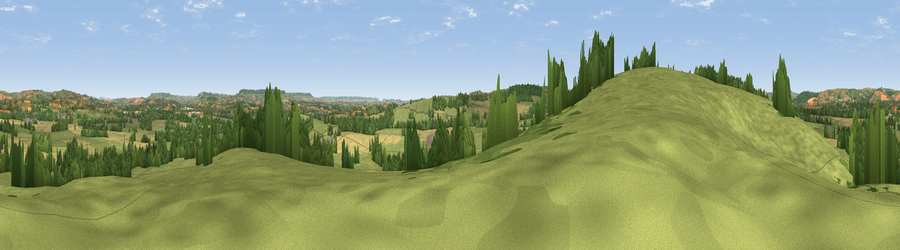

Viewpoint near Halberton
#22606 in England · top 39% of its area beats it · near HalbertonThe view, rendered

A 360° render of this exact spot computed from the terrain model, tree cover and land cover — summer colours, afternoon light, calibrated against photographs of famous viewpoints. Real trees, hedges and buildings will differ in detail.
The panorama
Grey silhouette: terrain skyline in each direction (720 bearings, Earth curvature and refraction included). Dashed green: skyline with trees (+15 m) and buildings (+8 m) as obstacles. Blue strip: how far the ground is visible on each bearing.
Where the view opens
Wedge length = distance to the farthest visible ground on that bearing (vegetation-aware). Rings at 10, 25 and 50 km.
What fills the view
65% grassland · 20% cropland · 14% woodland · 1% built-up
Angular shares of the visible panorama (visual magnitude), not map area. Landscape diversity 0.41 (0–1 Shannon).
Key numbers
More beautiful places nearby
The staircase of upgrades: each row has a higher view potential than everything closer. Driving times are estimates from straight-line distance, calibrated against real road routing — check an actual route before setting out.
| Place | Direction | Drive | Score |
|---|---|---|---|
| Viewpoint near Halberton | W · 0 km | ~1 min | 53.0 |
| Viewpoint near Cullompton | S · 2 km | ~5 min | 56.0 |
| Viewpoint near Tiverton | WNW · 3 km | ~7 min | 61.8 |
| Bingwell Hill | W · 3 km | ~8 min | 65.7 |
| Viewpoint near Butterleigh | SW · 5 km | ~12 min | 68.1 |
| Viewpoint near Bradninch | S · 6 km | ~13 min | 72.5 |
| Viewpoint near Silverton | SW · 6 km | ~14 min | 73.9 |
| Viewpoint near Bradninch | SSW · 7 km | ~14 min | 77.7 |
50.88510, -3.42119 · source: screening · position refined by local search. Computed location — check access rights before visiting.